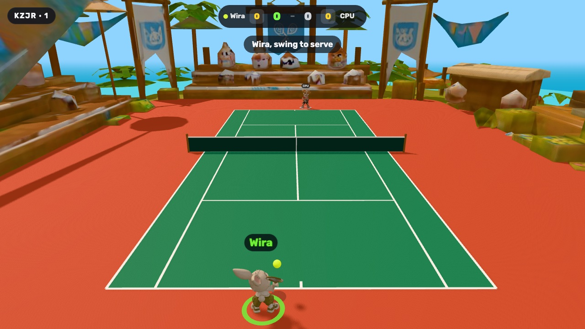
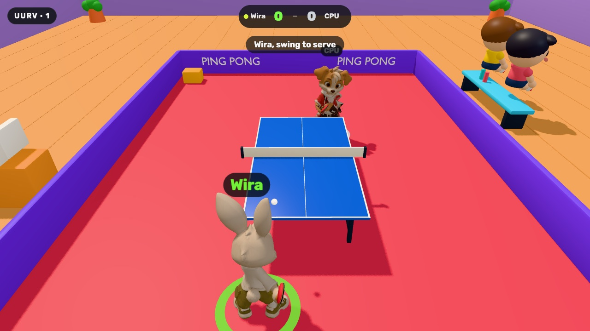
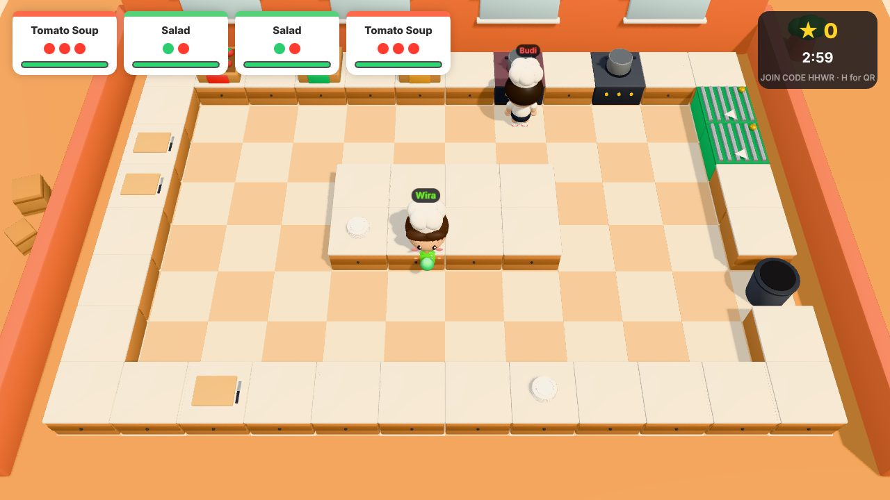

Party games on the big screen
Open Mabar on a laptop or TV, friends scan a QR code, and you’re playing in seconds. No app, no account.
To host, open this page on a laptop or TV browser. Phones are the controllers.
Mabar comes from main bareng: playing together.
Drag to turn the island, tap a pin to look closer

Swing your phone
Your player runs to the ball. You decide when to swing and how hard: early sends it left, late sends it right. Real scoring, from 15–love to advantage.
Motion controls1 to 4 playersSingles or doubles
Host Tennis
Swing your phone
Short, fast rallies across the table. A timing ring tells you when the ball is in reach, and with players on both sides the screen splits so each gets their own view.
Motion controls1 to 4 playersFirst to 5
Host Table Tennis
Phone gamepad
Chop, cook, plate and serve together before the orders run out. Soups burn if you forget them, and somebody always does.
Gamepad1 to 4 chefsCo-op
Host CookingHow it works
Start here
A laptop works, or a laptop plugged into the TV. Everything runs in the browser, so there is nothing to install for you or your friends.
No appNo accountUp to 8 phones
Host a gameOn a phone, you join: type the room code from the big screen into the box on this page.
Friends far away
Someone in another city opens the watch page on their own laptop or iPad, sees your game live, and joins with their phone like everyone else.
Live videoAny network
Open the watch pageGood to know